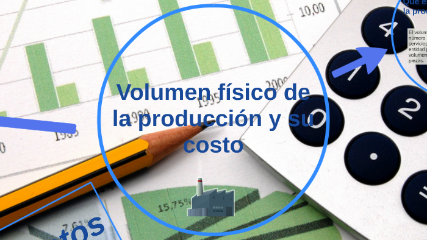

JESUS JONATHAN PEREZ CAMPOS
El costo de ventas es el gasto o el costo de producir de todos los artículos vendidos durante un período contable. Cada unidad vendida tiene un costo de ventas o costo de los bienes vendidos. Costo de Ventas = Inventario al comienzo del periodo + Compras y gastos durante el periodo - Inventario al Final del Periodo..
ContinuarMETODOS PEPS UEPS Y PROMEDIO PONDERADO. Este método presenta el inventario final a su costo más actual. Cuando aumentan los costos de inventario (aumento de precios) este método da como resultado una utilidad más alta y por tanto un impuesto sobre la venta mayor...
ContinuarEl Salario Diario Integrado (SDI) es el salario diario más todas las prestaciones que la ley puede o no obligar, aunque puede incluir prestaciones como comidas, transporte, vales de despensa, entre otras...
Continuar